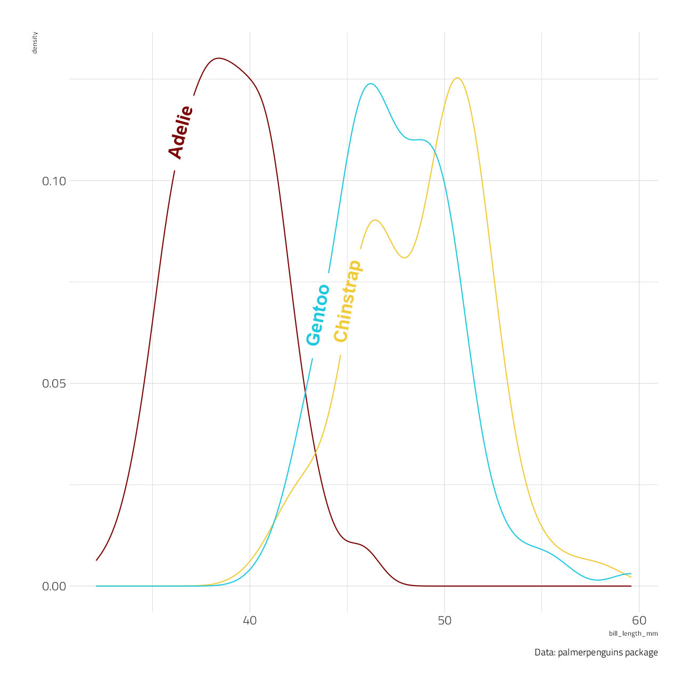
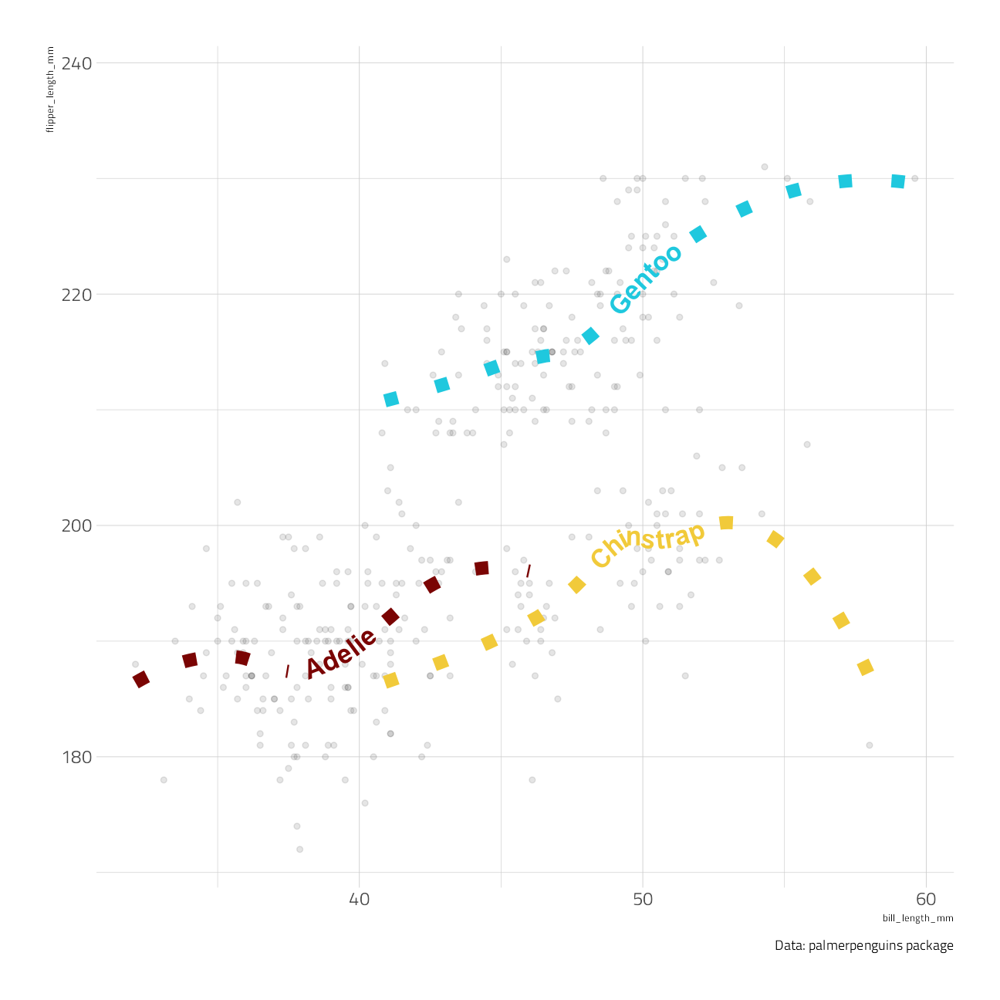

Last updated: 2021-12-26
Checks: 7 0
Knit directory: myTidyTuesday/
This reproducible R Markdown analysis was created with workflowr (version 1.7.0). The Checks tab describes the reproducibility checks that were applied when the results were created. The Past versions tab lists the development history.
Great! Since the R Markdown file has been committed to the Git repository, you know the exact version of the code that produced these results.
Great job! The global environment was empty. Objects defined in the global environment can affect the analysis in your R Markdown file in unknown ways. For reproduciblity it’s best to always run the code in an empty environment.
The command set.seed(20210907) was run prior to running the code in the R Markdown file. Setting a seed ensures that any results that rely on randomness, e.g. subsampling or permutations, are reproducible.
Great job! Recording the operating system, R version, and package versions is critical for reproducibility.
Nice! There were no cached chunks for this analysis, so you can be confident that you successfully produced the results during this run.
Great job! Using relative paths to the files within your workflowr project makes it easier to run your code on other machines.
Great! You are using Git for version control. Tracking code development and connecting the code version to the results is critical for reproducibility.
The results in this page were generated with repository version 58b3177. See the Past versions tab to see a history of the changes made to the R Markdown and HTML files.
Note that you need to be careful to ensure that all relevant files for the analysis have been committed to Git prior to generating the results (you can use wflow_publish or wflow_git_commit). workflowr only checks the R Markdown file, but you know if there are other scripts or data files that it depends on. Below is the status of the Git repository when the results were generated:
Ignored files:
Ignored: .Rhistory
Ignored: .Rproj.user/
Ignored: catboost_info/
Ignored: data/2021-11-27/
Ignored: data/2021-11-27glm_wf_final.rds
Ignored: data/CNHI_Excel_Chart.xlsx
Ignored: data/CommunityTreemap.jpeg
Ignored: data/Community_Roles.jpeg
Ignored: data/YammerDigitalDataScienceMembership.xlsx
Ignored: data/accountchurn.rds
Ignored: data/acs_poverty.rds
Ignored: data/advancedaccountchurn.rds
Ignored: data/airbnbcatboost.rds
Ignored: data/austinHomeValue.rds
Ignored: data/austinHomeValue2.rds
Ignored: data/australiaweather.rds
Ignored: data/baseballHRxgboost.rds
Ignored: data/baseballHRxgboost2.rds
Ignored: data/fmhpi.rds
Ignored: data/grainstocks.rds
Ignored: data/hike_data.rds
Ignored: data/nber_rs.rmd
Ignored: data/netflixTitles2.rds
Ignored: data/pets.rds
Ignored: data/pets2.rds
Ignored: data/spotifyxgboost.rds
Ignored: data/spotifyxgboostadvanced.rds
Ignored: data/us_states.rds
Ignored: data/us_states_hexgrid.geojson
Ignored: data/weatherstats_toronto_daily.csv
Ignored: gce-key.json
Untracked files:
Untracked: analysis/2021_10_29.Rmd
Untracked: code/YammerReach.R
Untracked: code/work list batch targets.R
Unstaged changes:
Modified: code/_common.R
Note that any generated files, e.g. HTML, png, CSS, etc., are not included in this status report because it is ok for generated content to have uncommitted changes.
These are the previous versions of the repository in which changes were made to the R Markdown (analysis/2021_12_26.Rmd) and HTML (docs/2021_12_26.html) files. If you’ve configured a remote Git repository (see ?wflow_git_remote), click on the hyperlinks in the table below to view the files as they were in that past version.
| File | Version | Author | Date | Message |
|---|---|---|---|---|
| Rmd | 58b3177 | opus1993 | 2021-12-26 | workflowr::wflow_publish("analysis/2021_12_26.Rmd") |
There have recently been a handful of Twitter posts on Allan Cameron and Teun van den Brand’s new package geomtextpath with new ggplot2 geoms for overlaying text over curved lines, giving the possibility to add nicer labels to charts.
One example:
tweetrmd::include_tweet("https://twitter.com/icymi_r/status/1474346205710802944")📦📊🔤 {geomtextpath} • Create curved text paths in ggplot2
— R posts you might have missed! (@icymi_r) December 24, 2021
👤 Allan Cameron @dr_allancameron and Teun van den Brand @TeunvandenBrand
🔗 https://t.co/wVchtBnlnm#rstats #datascience pic.twitter.com/hSmZ8jg6lV
I’ve worked in the past with economic time series and other datasets where, rather than labeling the point at the end the line, a label that adheres to it’s own line would have been more visually appealing.
Let’s build up some examples to showcase here. First, load up packages:
suppressPackageStartupMessages({
library(tidyverse) # clean and transform rectangular data
library(grumanlib) # my plot theme
})
# remotes::install_github("AllanCameron/geomtextpath")
library(geomtextpath)
library(palmerpenguins)
source(here::here("code","_common.R"),
verbose = FALSE,
local = knitr::knit_global())
ggplot2::theme_set(theme_jim(base_size = 12))The core functions in this package work like any other geom in ggplot2. They take their co-ordinates, their y co-ordinates and their text label, from an aesthetic mapping. This allows the label to be plotted on an arbitrary path, as shown in the following example:
penguins %>%
ggplot(aes(bill_length_mm, color = species, label = species)) +
geom_textdensity(size = 6, fontface = 2, hjust = 0.32, vjust = 0.3, show.legend = FALSE) +
labs(caption = "Data: palmerpenguins package")
The hjust parameter is powerful in positioning the label horizontally along each contour. Note that we have been able to “reclaim” the space normally taken up by the legend without leaving any ambiguity in the plot.
We can use these geoms to get trend lines through scatterplots:
penguins %>%
ggplot(aes(bill_length_mm, flipper_length_mm)) +
geom_point(alpha = 0.1) +
geom_textsmooth(aes(label = species, color = species),
method = "loess", formula = y ~ x,
size = 6, linetype = 3, fontface = 2, linewidth = 4,
show.legend = FALSE
) +
labs(caption = "Data: palmerpenguins package")
The package github repo vignettes cover quite a few other features, including orienting labels for polar plots and topographical contour lines.
sessionInfo()R version 4.1.2 (2021-11-01)
Platform: x86_64-w64-mingw32/x64 (64-bit)
Running under: Windows 10 x64 (build 22000)
Matrix products: default
locale:
[1] LC_COLLATE=English_United States.1252
[2] LC_CTYPE=English_United States.1252
[3] LC_MONETARY=English_United States.1252
[4] LC_NUMERIC=C
[5] LC_TIME=English_United States.1252
attached base packages:
[1] stats graphics grDevices utils datasets methods base
other attached packages:
[1] palmerpenguins_0.1.0 geomtextpath_0.1.0 grumanlib_0.1.0.9999
[4] forcats_0.5.1 stringr_1.4.0 dplyr_1.0.7
[7] purrr_0.3.4 readr_2.1.1 tidyr_1.1.4
[10] tibble_3.1.6 ggplot2_3.3.5 tidyverse_1.3.1
[13] workflowr_1.7.0
loaded via a namespace (and not attached):
[1] readxl_1.3.1 backports_1.4.1 systemfonts_1.0.3
[4] workflows_0.2.4 plyr_1.8.6 splines_4.1.2
[7] listenv_0.8.0 digest_0.6.29 foreach_1.5.1
[10] htmltools_0.5.2 yardstick_0.0.9 viridis_0.6.2
[13] parsnip_0.1.7 fansi_0.5.0 magrittr_2.0.1
[16] memoise_2.0.1 tune_0.1.6 tzdb_0.2.0
[19] recipes_0.1.17 globals_0.14.0 modelr_0.1.8
[22] gower_0.2.2 R.utils_2.11.0 hardhat_0.1.6
[25] rsample_0.1.1 dials_0.0.10 colorspace_2.0-2
[28] rvest_1.0.2 textshaping_0.3.6 haven_2.4.3
[31] xfun_0.29 callr_3.7.0 crayon_1.4.2
[34] jsonlite_1.7.2 survival_3.2-13 iterators_1.0.13
[37] glue_1.5.1 gtable_0.3.0 ipred_0.9-12
[40] R.cache_0.15.0 tweetrmd_0.0.9 future.apply_1.8.1
[43] scales_1.1.1 infer_1.0.0 DBI_1.1.2
[46] Rcpp_1.0.7 viridisLite_0.4.0 units_0.7-2
[49] GPfit_1.0-8 proxy_0.4-26 lava_1.6.10
[52] prodlim_2019.11.13 httr_1.4.2 ellipsis_0.3.2
[55] farver_2.1.0 R.methodsS3_1.8.1 pkgconfig_2.0.3
[58] nnet_7.3-16 sass_0.4.0 dbplyr_2.1.1
[61] utf8_1.2.2 here_1.0.1 labeling_0.4.2
[64] tidyselect_1.1.1 rlang_0.4.12 DiceDesign_1.9
[67] later_1.3.0 munsell_0.5.0 cellranger_1.1.0
[70] tools_4.1.2 cachem_1.0.6 cli_3.1.0
[73] generics_0.1.1 broom_0.7.10 evaluate_0.14
[76] fastmap_1.1.0 yaml_2.2.1 ragg_1.2.1
[79] processx_3.5.2 knitr_1.37 fs_1.5.2
[82] workflowsets_0.1.0 nlme_3.1-153 future_1.23.0
[85] whisker_0.4 R.oo_1.24.0 xml2_1.3.3
[88] compiler_4.1.2 rstudioapi_0.13 curl_4.3.2
[91] e1071_1.7-9 reprex_2.0.1 lhs_1.1.3
[94] bslib_0.3.1 stringi_1.7.6 highr_0.9
[97] ps_1.6.0 lattice_0.20-45 Matrix_1.3-4
[100] styler_1.6.2 classInt_0.4-3 conflicted_1.1.0
[103] vctrs_0.3.8 tidymodels_0.1.4 pillar_1.6.4
[106] lifecycle_1.0.1 furrr_0.2.3 jquerylib_0.1.4
[109] httpuv_1.6.4 R6_2.5.1 promises_1.2.0.1
[112] KernSmooth_2.23-20 gridExtra_2.3 parallelly_1.30.0
[115] codetools_0.2-18 MASS_7.3-54 assertthat_0.2.1
[118] rprojroot_2.0.2 withr_2.4.3 mgcv_1.8-38
[121] parallel_4.1.2 hms_1.1.1 grid_4.1.2
[124] rpart_4.1-15 timeDate_3043.102 class_7.3-19
[127] rmarkdown_2.11 git2r_0.29.0 sf_1.0-5
[130] getPass_0.2-2 pROC_1.18.0 lubridate_1.8.0